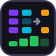
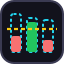
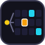
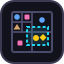
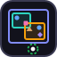
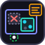

Interactive Demo / Java · Python
Apriori 頻繁樣式探勘
用超商交易紀錄一步一步看 Apriori 怎麼找出常一起買的商品：合併、剪枝、計數、篩選，每一步都同步標出 Java / Python 程式碼正在跑的那幾行。
資料和最小支持度都可以自己改，被剪掉的候選會說明是哪個子集合不頻繁；程式碼可直接下載執行。
Interactive Demo / Java · Python
FP-Growth 頻繁樣式探勘
同一份超商資料，換成 FP-Growth：看交易一筆一筆插進 FP-tree、共同前綴怎麼被壓縮，再沿著節點鏈找出條件模式基底、建條件樹、遞迴挖下去。
遞迴走到哪一層、程式跑到哪一行都同步顯示，最後和 Apriori 比較掃描資料庫的次數。
Interactive Demo / Java · Python
Eclat：垂直格式與交集
同一份超商資料的第三種做法：先把交易轉成「每個商品出現在哪幾筆交易」的垂直格式，再把同前綴的交易編號集合兩兩取交集、深度優先往下挖。交集有幾筆就是支持度，整個過程只掃一次資料庫；最後跟 Apriori、FP-Growth 比較。
Interactive Demo / Java · Python
封閉與最大樣式：CHARM
頻繁樣式常常多到看不完，而且很多資訊重複。先比較全部頻繁、封閉、最大三種答案：封閉樣式保留所有次數，最大樣式只留邊界。再一步一步看 CHARM 怎麼比較兩個樣式的交易集合，用四條性質合併、吸收或刪掉，直接找出封閉樣式。
Interactive Demo / Java · Python
週期性頻繁樣式（PFP-tree）
頻繁樣式只問出現幾次，週期性頻繁樣式還要問「隔多久出現一次」。把 8 筆交易當成 8 天，時間軸上直接標出每個組合在哪幾天出現、最長斷了幾天；PFP-tree 的節點不記次數、改在尾節點記 tid，挖完再把 tid 往上交。支持度、最大週期都能調，資料也能自己改。
Interactive Demo / Java · Python
gSpan 圖形樣式探勘
從交易、序列再到圖：把分子畫成圖（原子是點、化學鍵是邊），看 gSpan 怎麼把子圖寫成 DFS code、只從最右路徑一次接一條邊往外長。同一個子圖有很多種寫法，長出來的 code 不是最小的就剪掉，頁面會並排兩種寫法，標出是哪一列比較小；每張圖裡的嵌入都會標亮。
Interactive Demo / Java · Python
關聯規則：信賴度與提升度
接在 Apriori 後面：把頻繁樣式切成「買了 X 的人也會買 Y」的規則，一步一步算信賴度和提升度。後件逐層變大，只要一條不夠，包含它的更大後件就整批剪掉。看信賴度 75% 的規則為什麼可能其實毫無關聯，規則表可依信賴度、提升度排序。
Interactive Demo / Java · Python
序列樣式：PrefixSpan
這次多了先後順序：「早上買☕🍞，下次再來買🍙」。每位常客一條時間軸，看 PrefixSpan 怎麼用前綴把資料庫投影成越來越小的後綴，分成「同一次一起買」和「下一次才買」兩種延伸，一路遞迴找出常見的購買順序。
Interactive Demo / Java · Python

GSP 與 SPADE 序列樣式
序列樣式的另外兩種做法：GSP 像 Apriori 一層一層拼候選序列、每層掃一次資料庫；SPADE 像序列版 Eclat，把資料轉成 id-list，用「後來再買」「同一次一起買」兩種 temporal join 長出新樣式。跟 PrefixSpan 同一份資料、結果一樣，頁尾即時比較三種做法的掃描次數與候選數。
Interactive Demo / Java · Python

Two-Phase 高效益樣式
HUI-Miner 之前的經典兩階段做法：第一階段用有向下封閉性的 TWU 當上界，照 Apriori 一層一層挑候選；第二階段再掃一次資料庫算真正的效益。用長條圖看上界有多鬆、哪些候選是白算的，最後跟 HUI-Miner 比較掃描次數和候選數量。
Interactive Demo / Java · Python
UP-Growth：用樹找高效益樣式
把交易壓成一棵 UP-Tree，節點只記「到自己為止」的效益，挖條件樹時再扣掉一定不屬於組合的錢，上界比 TWU 緊，候選比 Two-Phase 少。一步一步看 DGU、DGN、DLU、DLN 四招怎麼收緊上界，最後跟 Two-Phase、HUI-Miner 比較。
Interactive Demo / Java · Python
HUI-Miner 高效益樣式探勘
同一間超商，這次記下每樣買了幾個、每樣賺多少。看「出現次數多」和「賺最多」的組合有什麼不同、為什麼效益不能像 Apriori 那樣直接剪，以及 TWU 上界和 utility list 的剩餘效益怎麼安全地剪掉不可能的分支。
Interactive Demo / Java · Python
EFIM：投影與合併
不建 utility list，直接在越縮越小的投影資料庫上挖高效益樣式：相同的投影交易合成一筆，再用 utility-bin 掃一次就算出 sub-tree utility 與 local utility 兩個上界。一步一步看投影、合併、剪枝，最後跟 Two-Phase、UP-Growth、HUI-Miner 比較掃描次數和建了多少結構。
Interactive Demo / Java · Python
不知道門檻該設多少？直接要效益最高的前 k 名。在 HUI-Miner 的 utility list 旁放一個排行榜，門檻從單品效益起跳、邊挖邊往上調，被新門檻剪掉的分支會標出來；最後比較跟「早就知道門檻」相比多花了多少。
Interactive Demo / Java · Python
USpan 高效益序列樣式
在有數量、有利潤的購買序列裡，找出「先買什麼、之後再買什麼」又最賺的樣式。一步一步看同一個樣式在一位顧客身上有好幾種對應時怎麼取最大、效益矩陣怎麼建、I-接和 S-接怎麼在 q-序列樹上長，以及用 SWU 和 SPU 剪枝；門檻可調、資料可編輯。
Interactive Demo / Java · Python
增量探勘：FUP
資料庫一直進新交易時，不用全部重算：舊樣式只看新的那幾筆就能更新次數，新冒出的候選先用一條引理篩過，只有少數需要回頭掃舊資料。可以自己組一批新交易，看 FUP 和全部重算各讀了幾筆。
Interactive Demo / Java · Python
CanTree：不用重建的 FP-tree
商品照事先定好的固定順序插進樹裡，新交易進來只要沿著一條路徑把次數加一，不會因為次數變了就要整棵重排重建；要挖的時候才照 FP-Growth 的方式挖。可以自己加新交易、隨時挖，並跟 FP-tree 比較順序和節點數。
Interactive Demo / Java · Python
IHUP 增量高效益樣式
資料一直進來，高效益樣式也不想每次從頭算。IHUP 把交易照固定的字典序插進樹裡、節點記 TWU，新交易直接沿一條路徑加上去、不用重建；要結果時才像 FP-Growth 一樣挖出候選，再掃一次驗證。可以自己加交易、選時間點挖，跟每次從頭跑 Two-Phase 比掃描次數。
Interactive Demo / Java · Python
滑動視窗頻繁樣式
資料串流源源不絕，只關心最近 W 筆：每進來一筆、最舊的離開，用計數表只改受影響的組合，即時更新頻繁與最大頻繁樣式。附支持度隨時間變化的折線圖，看早上、中午、晚上的購買習慣怎麼變。
Interactive Demo / Java · Python
串流近似計數：Lossy Counting・Space-Saving
資料串流停不下來、記憶體又不夠每個商品都記時，怎麼知道誰賣得最多？看 Lossy Counting 分桶大掃除、Space-Saving 只用 k 個計數器搶位子，對照真實次數和估計次數，看「少算不超過 εN／多算不超過 N/k」的保證怎麼成立。
Interactive Demo / Java · Python

Count-Min Sketch
不記商品名稱，只用 d 列 × w 欄的計數格子數串流：每來一筆，每一列用雜湊算出一格加一；查詢時取 d 格裡最小的。看商品怎麼撞進同一格、為什麼只會多算不會少算，還可以切換保守更新比較誤差。
Interactive Demo / Java · Python
Bloom Filter 與誤判率
超商集點活動要判斷「這張發票登錄過了沒」：Bloom Filter 只用 m 個位元和 k 個雜湊函數，一步一步看登錄時設定 k 格、查詢時看到第一個 0 就確定沒登錄過，以及誤判是怎麼來的。可以自己輸入號碼、調 m 和 k，對照理論與實測誤判率找出最佳 k，最後打開計數版看怎麼做到刪除。
Interactive Demo / Java · Python
HyperLogLog 基數估計
今天有幾位「不同的」會員來店？HyperLogLog 不記卡號，只用 m 個小暫存器：一步一步看卡號怎麼雜湊、前 p 個位元決定第幾格、開頭幾個 0 變成 ρ、暫存器只留最大值，再算出人數。可以一次灌入十萬次來店，對照誤差和理論 1.04/√m，最後把兩家分店的結果合併成聯集。
Interactive Demo / Java · Python

空間資料：四元樹與共位樣式
在街區地圖上點出店家，看四元樹怎麼依密度一路切格子、範圍查詢怎麼整塊跳過不相干的區域；另一頁用鄰近距離定義「一起出現」，算參與指數找出哪幾種店總是開在彼此附近。
Interactive Demo / Java · Python

R-tree 與 kNN 查詢
在街區地圖上一個點一個點插入，看 R-tree 怎麼挑「擴大最少」的框、節點滿了怎麼一分為二，長出一層層巢狀的框；再點地圖選位置，看優先佇列依距離一路找出最近的 k 家店，太遠的框連打開都不用。
Interactive Demo / Java · Python

IR-tree 空間關鍵字查詢
「離我最近、咖啡和牛奶都有賣的 3 家店在哪？」在 R-tree 每個節點掛一份倒排表，點地圖選位置、勾選要買的商品，一步一步看商品湊不齊的框怎麼整個跳過、湊得齊的才依距離排進佇列；再跟「先找最近再檢查」、「先查倒排表再全部排序」比打開的節點和算距離的店家數。
Interactive Demo / Java · Python
圈裡鄰居夠多的點是核心點，用佇列把鄰居一圈一圈拉進來長成一群，鄰居太少的先標成雜訊，之後可能被收編。不用先指定群數，兩個月牙、同心圓也分得開，還能跟 k-means 的結果並排比較。
Interactive Demo / Java · Python
Skyline 查詢：BNL 與 SFS
中午找店吃飯，又便宜又近的店有哪些？在「價格 × 距離」散布圖上一步一步看 BNL 怎麼用有限的視窗比較、放不下的寫進暫存檔下一輪再讀，以及 SFS 先排序後視窗只進不出、比較次數少多少；可以點圖新增店家，或隨機產生獨立、相關、反相關三種分布。